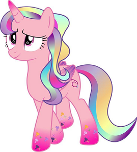
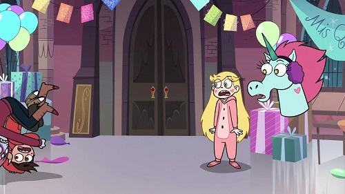
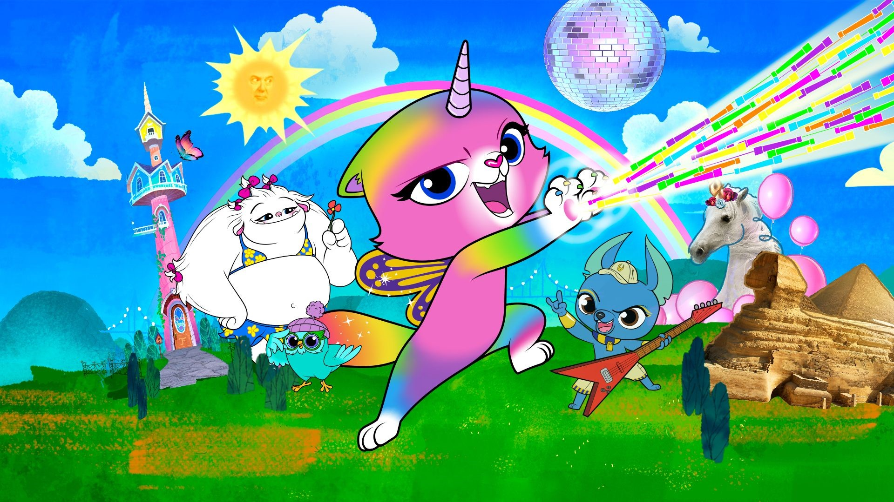
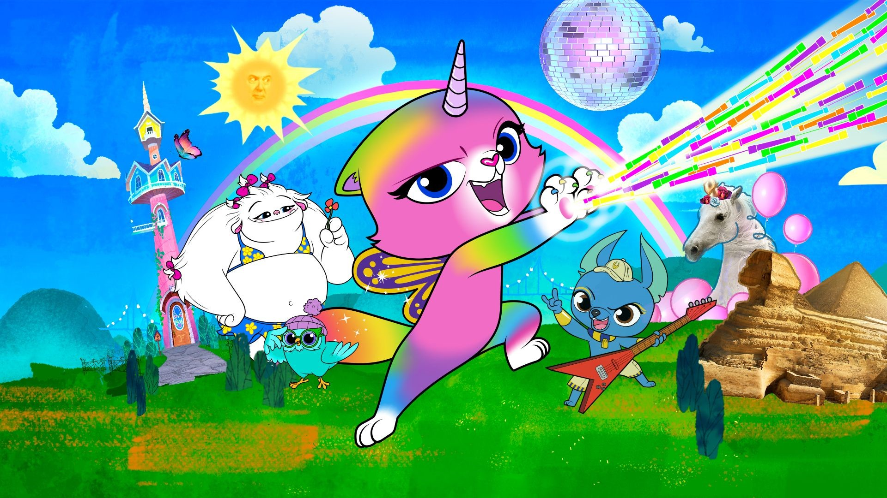

A cat? A unicorn? A butterfly? To be honest, we don't understand ourselves. But it's cute ;)
Unikitty (subspecific unicorns-cats)
If you don't like to play lego, then you are forbidden to have such a friend. Either love lego or choose something else!

Clear Sky (subspecific Unicorn ponies)
Care and attention is what this species requires. And don't forget about crazy adventures from time to time
Agnes' Unicorn (subspecific Toys-friends)
Attention! This kind can only be won in our tombola! Not for sale! Look for details somewhere on our website
About Us
Fairies, brownies, unicorns - everything exists if you believe in it. We present you a unique chance to find an unusual friend. To
become a happy owner of a unicorn, you only need to fill out a questionnaire and we will contact you. But not everything
is so simple, do not forget that you do not choose the unicorn, but the unicorn chooses you. Before you can take the unicorn
home, you need to take a three-month course that will prepare you and the unicorn for the future. You will learn how to take
care of unicorns, what they like to do in their free time, how often it is necessary to arrange a day of laziness and become real
friends with your future pet.
Future Customers

My name is Star Butterfly, I am 15 years old,
and my friend Marco Marco Diaz is also 15 years old.
Endless adventures and fight against evils.
We are friends and we want to get a pet to fight evil,
but also cute and unusual.
"You saw a for real, like, unicorn?
What did it look like? Did you pet it?
Did it smell like candy? Was it FLUFFY?"
 

 Pony Head Unicorn
Pony Head Unicorn Warnicorns
Warnicorns Rainbow Butterfly Unicorn Kitty
Rainbow Butterfly Unicorn Kitty Unikitty
Unikitty  Agnes' Unicorn
Agnes' Unicorn